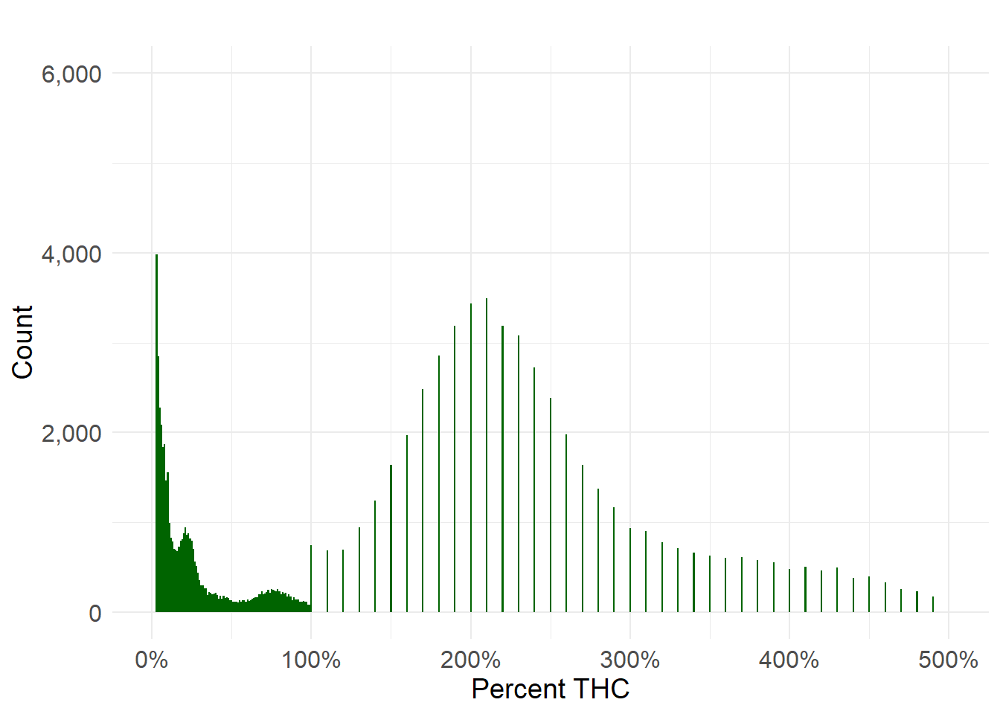
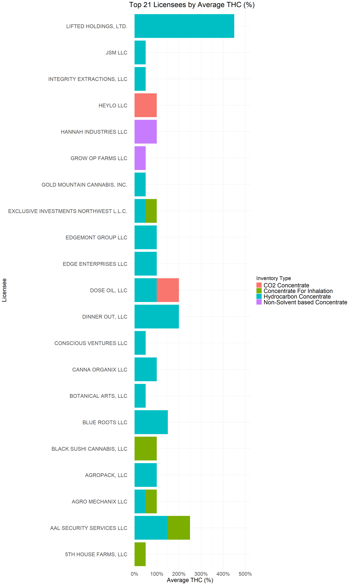

thc_test_count avg max min
1 147614 25.74 180.1 0Understanding THC Potency in Washington’s Cannabis Market: What CCRS Data Reveals (Jan 2024-Oct 2025)
A look at how strong marijuana is in Washington’s Cannabis Industry
CCRS
Cannabis
THC
Lab Results
The Bottom Line Up Front
THC potency data in Washington’s CCRS system reveals:
a bimodal THC distribution,
concentrate-driven right tail values,
evidence of lab inconsistencies,
frequent reporting unit errors,
and clear market pressure toward high THC labeling.
As The Evergreen Canna Ledger expands, our goal is to make potency data transparent, interpretable, and actionable — supporting:
evidence-based policymaking,
more equitable wholesale markets,
and honest communication with consumers.
Overview
Market Implications: What THC Trends Tell Us
A. Potency Drives Pricing
Wholesale buyers pay more for products above 25–28% THC, even if research shows no correlation between THC percentage and consumer experience.
B. Brands Leveraging High Lab Results Win Shelf Space
Retailers face consumer demand for high potency labels; thus, brands with “inflated” results often outsell honest ones.
C. Distortion Harms Cultivators and Consumers
Cultivators with legitimate, accurately tested 17–22% flower may be artificially disadvantaged.
Consumers are misled about strength and risk tolerance.
D. The Industry Would Benefit From Standardized Reporting
Washington could consider:
method-specific reporting,
standardized units,
mandatory lab round-robin audits,
automated CCRS data validation rules.
THC Tests Summary
Why Are Some THC Values So High?
TECL identifies five major contributors to extreme THC values:
- Concentrate Potency
Certain extraction methods easily reach:
70–85% THC (CO₂)
75–90% THC (Hydrocarbon)
60–80% THC (Rosin)
These account for much of the right-tail.
- Lab Variability
Washington has no unified statewide testing standard, and CCRS receives only the submitted values — not the method or certificate. Inter-lab variation is widely known in the industry.
- Units Misreported as Percent
CCRS accepts raw numeric fields. If a lab reports mg/g, CCRS interprets it as “percent.” Examples:
800 mg/g → 800% THC
200 mg/g → 200% THC
These contribute to the extreme right-tail.
- Potency Inflation Behavior
Competitive pressures incentivize labs and processors to “keep up” with the market. Numerous academic reports and media investigations have documented potency inflation nationwide.
Washington is not immune.
- Intermediate Material
Concentrates in mid-processing (distillate still in refinement) can reach extremely high values before blending.
Distribution of THC Test Values

Licensees With the Most High-THC Results
A TECL-generated ranking of the top 50 high-THC performers shows:
Many licensees repeatedly produce avg THC = 50% across hundreds or thousands of tests.
Several show max THC values in the 74–79% range.
Hydrocarbon processors appear most frequently, indicating:
consistent extraction methods,
BHO consistently produces the highest test results, with many processors showing avg THC = 50% and max THC ≥ 75–80%,
CO₂ oils tend to cluster around 50–74% THC,
strong lab partnerships,
or market positioning around high-potency products.
Noteworthy THC Contributors:
LIFTED HOLDINGS, LTD. appears in 10+ line items in the top 50.
HANNAH INDUSTRIES LLC regularly ranks at the top of non-solvent concentrates.
AGRO MECHANIX LLC ranks in both hydrocarbon and inhalable concentrates.
A. Large Cluster at 0–1% THC
Thousands of samples report near-zero THC — almost always:
immature plants,
post-harvest waste streams,
intermediate materials not meant for retail,
or categories where THC is not the primary analyte.
These are expected and legitimate low-THC values.
B. A Mid-Market Cluster (~15–30% THC Flower)
This is the region most consumers associate with “normal” cannabis potency. The bulk of usable cannabis and flower lots fall here, forming a wide bell-shaped distribution.
C. A Long Tail Stretching From 35% to 500%
This portion of the distribution reveals:
high-potency concentrates (hydrocarbon, CO₂, rosin),
potency-inflated results,
lab inconsistencies or reporting errors,
mislabeled units (e.g., mg/g reported as percent),
and possible THC inflation behavior tied to competitive pressures.
Values above 100% THC are only possible for concentrates, where THC can exceed 800 mg/g (80%). However, CCRS records include results up to 500%, indicating misreporting or pre-standardization unit confusion.
This consistency suggests reliable output — or potentially systematic potency inflation, something that only comparative inter-lab analysis can confirm.

Inventory Type View
To compare by product type:

THC potency is one of the most influential and controversial — and misunderstood — metrics in Washington’s cannabis marketplace. Although potency has become a dominant driver of consumer choice, wholesale pricing, retail margins, and brand strategy, few stakeholders have access to the underlying data needed to understand what potency really looks like across product categories, labs, and licensees.
Using millions of CCRS laboratory test results, The Evergreen Canna Ledger analyzed THC distribution patterns, outliers, potency inflation signals, and the operators producing the highest-reported THC values in 2023–2025.
What was provided was a data-driven look at how potency behaves in Washington’s regulated market — and what those patterns mean for cultivators, processors, retailers, and policymakers.
TECL will continue producing policy-ready data summaries such as these.
Join the Discussion
Your insights help drive better transparency and smarter policy in Washington’s cannabis industry.